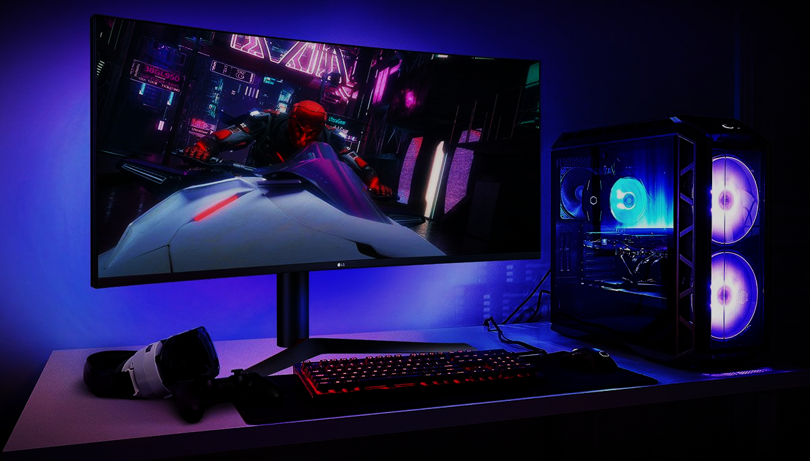
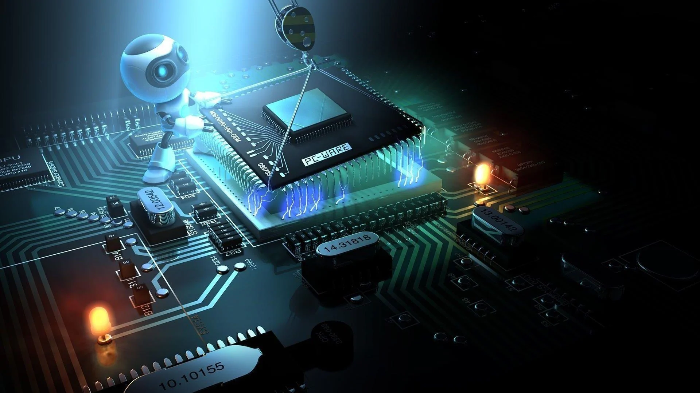
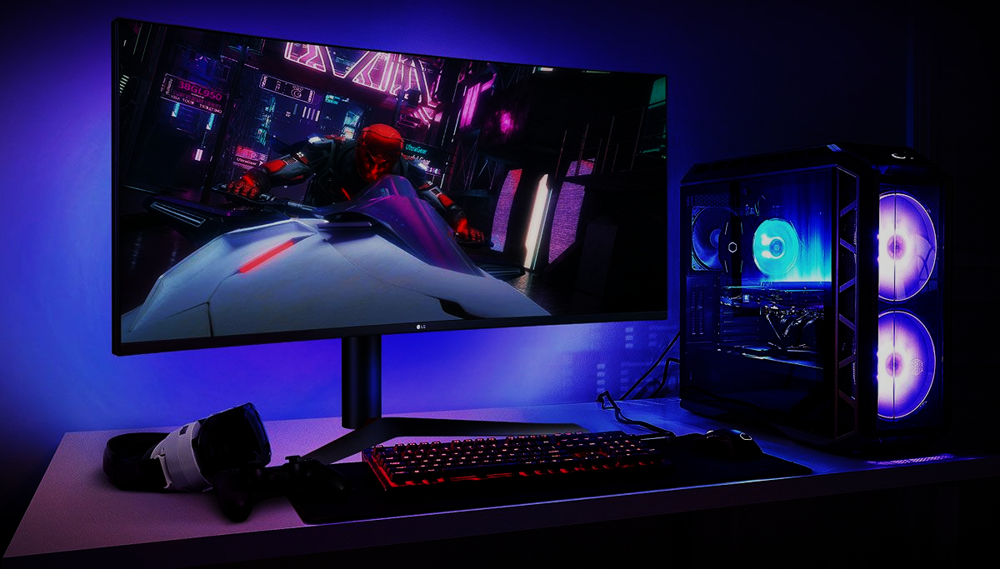
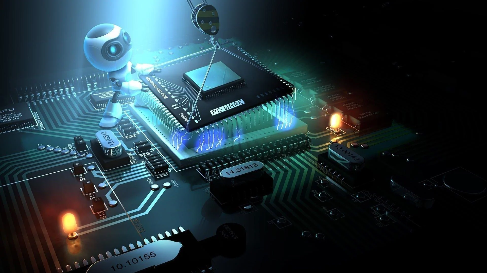
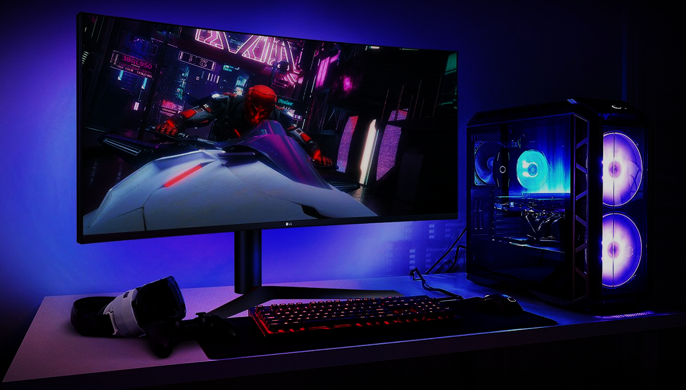
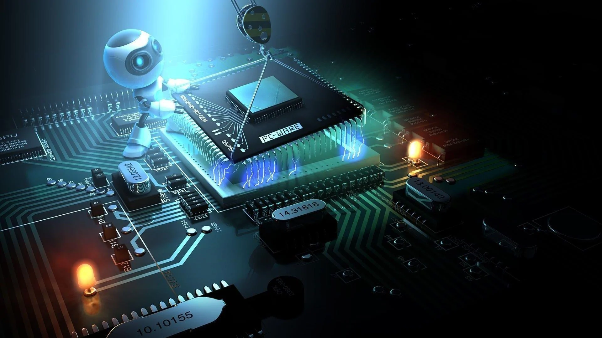

Redes de computadores são estruturas interconectadas que permitem a troca de informações e recursos entre diferentes dispositivos. Elas desempenham um papel fundamental na comunicação moderna, facilitando desde a conexão entre computadores em uma mesma residência até a comunicação global pela internet.
Essas redes são compostas por uma variedade de componentes, incluindo cabos, roteadores, switches e dispositivos de rede sem fio. Cada componente desempenha um papel específico na transmissão e recepção de dados, garantindo a eficiência e confiabilidade da rede.
Existem diferentes tipos de redes de computadores, como LANs (Redes Locais), WANs (Redes de Área Ampla) e MANs (Redes Metropolitanas), cada uma com suas características e aplicações específicas. As LANs, por exemplo, são usadas em ambientes como escritórios e residências, enquanto as WANs conectam redes em diferentes localidades geográficas.
Uma das principais vantagens das redes de computadores é a capacidade de compartilhar recursos, como impressoras, arquivos e conexões à internet. Isso aumenta a produtividade e a eficiência, permitindo que várias pessoas acessem e utilizem recursos compartilhados simultaneamente.
A segurança da rede é uma preocupação importante, especialmente com o aumento das ameaças cibernéticas. Medidas como firewalls, criptografia e autenticação são essenciais para proteger os dados e os dispositivos em uma rede de computadores.
Além disso, as redes de computadores estão constantemente evoluindo para atender às demandas crescentes de largura de banda e velocidade de conexão. Tecnologias como fibra óptica e redes 5G estão expandindo as capacidades das redes, possibilitando uma comunicação mais rápida e confiável.
As redes de computadores desempenham um papel crucial em diversas áreas, incluindo educação, negócios, saúde e entretenimento. Elas facilitam a colaboração entre pessoas e organizações, permitindo o compartilhamento de informações e recursos de forma eficiente e rápida.
No entanto, também enfrentam desafios, como a necessidade de gerenciamento eficaz de redes, a manutenção de padrões de segurança e a garantia de compatibilidade entre diferentes dispositivos e sistemas operacionais.
Em resumo, as redes de computadores são fundamentais para a infraestrutura digital moderna, conectando pessoas, empresas e dispositivos em todo o mundo. Seu papel continuará a crescer à medida que a sociedade se torna cada vez mais dependente da tecnologia para comunicação e colaboração.
Imagine um mundo onde computadores, como peças de um quebra-cabeça gigante, se conectam e trabalham juntos, independentemente de suas localizações. Essa é a essência dos sistemas distribuídos, a base da internet que nos conecta e impulsiona a era digital.
Em vez de um único computador centralizado, sistemas distribuídos dividem tarefas entre diversos computadores, cada um operando de forma autônoma. Essa rede complexa, como uma orquestra sinfônica, trabalha em conjunto para alcançar um objetivo comum, seja fornecer acesso à informação, viabilizar o comércio online ou conectar pessoas ao redor do globo.
Mas como essa mágica acontece? Diversos protocolos e tecnologias garantem a comunicação fluida entre os computadores, como se fossem diferentes instrumentos musicais tocando em harmonia. A internet, por exemplo, utiliza o protocolo TCP/IP para garantir que os dados cheguem ao seu destino sem se perderem no caminho.
Sistemas distribuídos não são apenas sobre tecnologia. Eles abrem um universo de possibilidades, moldando a forma como vivemos, trabalhamos e nos comunicamos. Desde gigantescas redes sociais que conectam bilhões de pessoas até serviços em nuvem que armazenam nossos dados e oferecem recursos computacionais sob demanda, esses sistemas estão presentes em nosso dia a dia.
No entanto, construir e gerenciar sistemas distribuídos não é tarefa fácil. Desafios como falhas de componentes, segurança de dados e coordenação de tarefas exigem soluções inovadoras e expertise especializada. É nesse cenário que surgem profissionais qualificados para garantir o funcionamento impecável dessa teia digital.
Para desvendar os segredos dos sistemas distribuídos, diversas ferramentas e linguagens de programação são utilizadas. Java, Python, C++ e Go são apenas algumas das ferramentas que permitem dar vida a esses sistemas complexos.
O futuro dos sistemas distribuídos é promissor e repleto de oportunidades. A computação em nuvem, a internet das coisas e a inteligência artificial impulsionam o desenvolvimento de novas tecnologias e aplicações, expandindo ainda mais as fronteiras do que é possível com essa fascinante tecnologia.
Se você se interessa por desafios, gosta de desvendar mistérios e busca fazer a diferença no mundo digital, os sistemas distribuídos podem ser o caminho ideal para você. Explore esse universo, domine as ferramentas e torne-se um maestro da orquestra digital que molda o nosso futuro.
Exemplo de sistema distribuído, a blockchain, tecnologia inovadora que funciona como um livro-razão digital gigantesco e imutável, está revolucionando diversos setores da sociedade. Através da criptografia e descentralização, garante a confiabilidade e a segurança das transações, sem a necessidade de intermediários.
Com o blockchain, cada transação é registrada de forma transparente e acessível a todos, criando uma trilha auditável que não pode ser manipulada. Essa tecnologia tem o potencial de transformar áreas como finanças, cadeias de suprimentos, gestão de identidade e muito mais.

